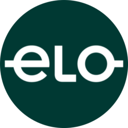
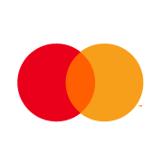
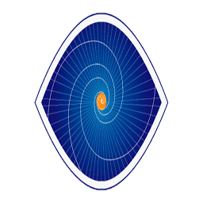

O que a Chatbank é, e o que ela está virando.
A Chatbank é a camada conversacional que está virando o jeito padrão de operar serviços financeiros no Brasil. A gente nasceu no WhatsApp porque é onde o brasileiro já vive, e a stack que a gente construiu transforma uma mensagem em uma transação executada de verdade. O cliente do banco abre a conversa, pede pra pagar o Pix, contrata o empréstimo, fecha a cobrança em 30 segundos sem cair em URA, sem login em app. É produto financeiro acontecendo dentro da conversa, não chatbot atendendo demanda. E o motor é canal-agnóstico: começa no WhatsApp, abre porta pra voz, RCS, iMessage e Telegram a partir de 2027.
O orçamento aprovado de 2026 fecha em R$15,07MM de faturamento bruto, R$11,46MM de EBITDA com 80,64% de margem, R$10,12MM de lucro do exercício e R$7,51MM de caixa operacional gerado no ano. Cada um desses números é receita já contratada com cliente fechado, não projeção. O ano combina três contratos relevantes de venda de fonte (ELO, Tivit e Dock) com a base recorrente em formação (LeCard, Banco Industrial e Onda Finance), e o pipeline qualificado pra 2027 já carrega ELO WhatsApp AI, Autbank e a próxima leva de cross-sell.
O case institucional que sustenta tudo isso é a aquisição da tecnologia pela ELO, primeira aquisição de IA do ano da bandeira, anunciada em abril de 2026. A diligência técnica foi conduzida pela Compass UOL com investimento de R$300 mil pela ELO, e a stack do Chatbank passou em 100% dos pontos avaliados. Quando uma das maiores bandeiras do Brasil compra a sua tecnologia, escreve sobre isso no UOL e abre uma linha de receita pra você no orçamento do ano seguinte, é porque o produto funciona em produção.
Por décadas, o software ensinou pessoas a falar com computadores. Agora a direção mudou.
Por décadas a gente aprendeu a clicar em menus, preencher formulários, decorar onde fica cada botão. Em 2022 o ChatGPT mostrou o que vinha depois: um jeito completamente diferente de pedir as coisas pra uma máquina, que é o jeito mais antigo que existe, falar. E o movimento não parou no consumidor. O Google empurra o UCP, protocolo comercial que faz pra empresas o que o ChatGPT fez pras pessoas. No lugar de integração via APIs tradicionais, com documentação e meses de engenharia, agora as empresas começam a conversar entre si por meio de agentes.
A história da interface humano-máquina é uma escada de três degraus. Primeiro a escrita à mão, depois a digitação, agora a conversa. Cada degrau não substituiu inteiramente o anterior, mas mudou o default de como as pessoas operam. Quem ficou no degrau anterior virou exceção.
A Chatbank nasceu na ponta certa dessa curva. A gente construiu infraestrutura conversacional pra serviços financeiros usando WhatsApp como primeiro canal, porque é onde o brasileiro já está. O motor é canal-agnóstico, e o setor é só o primeiro.
Pra qualquer adquirente estratégico no setor financeiro, isso significa duas coisas muito concretas. A primeira é posicionamento na camada que vira default em todo serviço financeiro nos próximos cinco anos. Quem não tem essa camada ou compra ou constrói, e construir leva anos. A segunda é que a tecnologia entregue hoje a clientes financeiros se estende pra qualquer setor que use linguagem pra se relacionar com cliente, o que é, em última análise, todo setor que existe.
A janela é curta. Os próximos 18 a 24 meses definem quais empresas viram a "camada conversacional padrão" em cada setor. Em fintech B2B Brasil, esse jogo está sendo decidido agora, e a Chatbank já está na ponta jogando.
Uma plataforma de agentes financeiros, plugável em qualquer core bancário.
A Chatbank entrega uma plataforma completa para construir, operar e escalar agentes conversacionais com foco em serviços financeiros. A arquitetura é modular e canal-agnóstica: o mesmo motor serve cobrança via WhatsApp hoje e atendimento por voz amanhã, sem reescrever lógica de negócio.
Componentes da stack § 02.1
IP proprietário § 02.2
- Cache semântico · redução média de 40 a 60% no custo de inferência sem perda de qualidade percebida.
- Templates regulados · biblioteca de fluxos certificados Meta para serviços financeiros (cobrança, originação, autenticação 2FA).
- Conectores certificados · integrações ativas com cores bancários e processadoras de cartão líderes no mercado brasileiro, com homologação que leva meses pra um competidor replicar.
- Base de conhecimento setorial · ontologia financeira interna usada pelo motor para entender intenção em cobrança, crédito, seguros e investimentos.
Diferencial técnico § 02.3
Concorrentes generalistas (chatbot CPaaS) entregam canal, ou seja, mensageria com NLU básico. A Chatbank entrega capability completa de produto financeiro conversacional: o agente executa a transação, não só conversa sobre ela. Em produção isso significa que um cliente do banco resolve cobrança via Pix dentro do WhatsApp em 30 segundos, sem cair em URA, sem login em app.
Compliance & segurança § 02.4
Stack compatível com LGPD, com dados criptografados em trânsito e em repouso, retenção configurável por cliente, e logs imutáveis pra auditoria. Em ambientes regulados (Bacen, SUSEP), opera sob diretrizes de cibersegurança da Resolução 4.893 e equivalentes setoriais. Prontidão pra SOC 2 Tipo II prevista no roadmap de 2027.
Onde o produto está indo § 02.5
A plataforma já é multi-tenant em produção, com isolamento por cliente, governança por agente e observabilidade por turno. Esse é o ponto de partida, não a chegada. A direção daqui pra frente é uma só: plugar o Chatbank na economia agêntica e na intenção de compra. Quatro vetores guiam essa evolução, todos puxados pelo mercado e por demanda real de cliente.
O foco operacional segue sendo vender. O produto evolui no tempo, mediante demanda real, sem deixar a inovação de lado. A regra é simples: nada entra no produto sem caso de uso de cliente real, mas nada relevante de mercado fica de fora por mais de um ciclo.
Mercado grande, players genéricos, poucos focados em financeiro.
Tamanho de mercado · Brasil § 03.1
O Brasil tem 165+ milhões de usuários ativos de WhatsApp e o canal já é o principal ponto de atendimento de instituições financeiras para classes B/C. Pesquisa Febraban indica que mais de 70% dos brasileiros preferem resolver demandas bancárias por mensagem em vez de telefone ou app.
O mercado endereçável de conversational banking no Brasil está estimado em R$3 a R$5 bilhões em receita anual de software e serviços até 2028, considerando bancos médios, fintechs, cooperativas, consórcios, seguradoras, bandeiras e adquirentes. Hoje, a maior parte é capturada por integradores genéricos com baixa especialização vertical.
Mapa de players § 03.2
Por que financeiro é o segmento certo § 03.3
- Volume · cada banco médio gera 10 a 50 milhões de interações conversacionais por ano. Pricing por volume + por capability sustenta ARR alto.
- Regulatório como moat · LGPD, Bacen, SUSEP e PCI-DSS criam barreira de entrada que generalistas não atravessam. Quem certifica fica.
- Consolidação em curso · setor financeiro brasileiro vive ciclo intenso de M&A entre plataformas de software e infra de pagamentos. Compradores estratégicos buscam capability cobrindo exatamente essa lacuna conversacional.
- WhatsApp = canal default · Bacen permitiu Pix via WhatsApp em 2024. Cada nova permissão regulatória abre nova linha de receita.
Posicionamento § 03.4
A Chatbank ocupa a posição de "capability layer" entre o canal (WhatsApp/RCS/voz) e o core bancário do cliente. A gente não compete com CPaaS por canal, é cliente deles. Não compete com cores bancários por sistema, é cliente deles. Vendemos a ponte que transforma uma mensagem em uma transação executada e auditada.
A ELO comprou a tecnologia da Chatbank. É a primeira aquisição de IA do ano da bandeira.
Em abril de 2026 a ELO anunciou publicamente a aquisição da tecnologia de IA do Chatbank, a plataforma que integra serviços bancários diretamente a aplicativos de mensagens. O movimento faz parte da transição da ELO de operadora transacional pra plataforma de serviços com foco em maior valor agregado na jornada de pagamentos. É a primeira aquisição de IA da ELO no ano, alinhada com a estratégia de modernização tecnológica da bandeira.
- Validação por uma das maiores bandeiras de cartão do Brasil, regulada pelo BCB.
- Linha aberta no orçamento ELO 2027 pra WhatsApp AI.
- CEO Chatbank como interlocutor técnico junto a CIO e CTO da ELO.
- Imprensa positiva nacional após o anúncio (UOL, Valor, NeoFeed).
Diligência técnica completa, 100% aprovada § 04.1
Antes de fechar contrato, a ELO investiu cerca de R$300 mil com a Compass UOL pra conduzir a diligência completa de arquitetura e tecnologia do Chatbank. Cada componente foi auditado: orquestração de agentes, motor de NLU, conectores de canal, toolbelt financeiro, observabilidade, compliance LGPD e Bacen. A stack passou em 100% dos pontos avaliados. Esse selo, vindo de um processo formal pago por uma bandeira regulada, vale mais do que qualquer apresentação comercial: já existe uma terceira parte independente confirmando que o produto entrega o que promete em escala.
O que a ELO está construindo em cima da stack § 04.2
- ELO Chat · canal bancário inteligente para a base de 140 milhões de portadores da bandeira, com Pix e open finance como ativos principais. É o produto que vai colocar a ELO na conversa direta com o usuário final do cartão pela primeira vez.
- Plataforma agentica white-label · portal onde comerciantes parceiros da ELO criam o próprio chatbank, com foco em ofertar UCP do Google ao mercado brasileiro. Receita recorrente por comerciante, escala via base existente.
- WhatsApp AI 2027 · linha já aberta no orçamento da ELO pra o ano que vem, em fechamento final de escopo. Continuidade direta da relação comercial.
Receita ELO vs investimento em entrega § 04.3
O contrato ELO de 2026 totaliza R$5,01MM em receita (fonte mais squad de implantação). Pra entregar tudo isso a gente investiu cerca de R$2,1MM entre comissão comercial, time técnico dedicado, sustentação, marketing institucional e administração. A pizza abaixo mostra como esse investimento se distribuiu: a maior fatia foi pra comissão e entrega operacional, exatamente como previsto no plano tático original.
O case ELO é a melhor prova externa que a Chatbank tem hoje: uma instituição financeira de porte regulado validou tecnicamente a stack via terceira parte, fechou contrato comercial relevante, está construindo três produtos novos em cima da tecnologia, e abriu linha de receita pra o ano seguinte. A tese pra escalar dentro do setor financeiro brasileiro é exatamente esse padrão replicado em mais bandeiras, processadoras e bancos.
O que precisamos para entregar o cenário base.
Construir o pipeline que sustenta o cenário base de R$12,68MM em 2027 depende de quatro frentes complementares, e a gente trabalha as quatro em paralelo. Em ordem de custo de aquisição crescente:
Pipeline de clientes § 05.1
O pipeline 2026/2027 combina os contratos já em produção com prospects qualificados em conversão ativa. A composição inclui bandeiras, processadoras, bancos médios, fintechs, cooperativas e adquirentes. É exatamente o ecossistema que a stack do Chatbank foi construída pra servir.






Funnel esperado § 05.2
Pra entregar 4 a 5 logos novos no cenário base, o funil esperado pra 2027 é de cerca de 80 reuniões qualificadas (acesso via canal mais eventos), 25 POCs ou pilotos contratados, e 5 contratos ARR fechados. Conversão de POC pra contrato em torno de 20% é consistente com benchmarks B2B SaaS no setor.
Sociedade limitada brasileira, cap table fechado e estável.
Estrutura jurídica § 06.1
- Razão social · Chatbank Tecnologia LTDA
- Forma · Sociedade limitada, sob lei brasileira
- Sede · São Paulo, SP
- Regime tributário · Lucro presumido
- Litígios · Sem litígios societários ou trabalhistas ativos
Cap Table § 06.2 · participação atual
Histórico de capitalização § 06.3
Em 2024, a LC INVEST aportou R$1,5 milhão e recebeu 15% de participação inicial, com posição atual de 20% após movimentações societárias. O aporte implicou valuation pre-money de R$8,5 milhões em 2024, a referência externa de avaliação mais próxima que a empresa tem antes do presente memorando.
Desde o aporte, a empresa cresceu organicamente, sem novas rodadas de captação. Toda expansão de time, infra e go-to-market foi financiada pelo caixa operacional gerado por contratos comerciais.
Orçamento aprovado, cliente a cliente.
| Cliente | Natureza | Faturamento | % total |
|---|---|---|---|
| ELO | Venda de código fonte | 3.958.000 | 26% |
| ELO Squad | Implantação · one-time, parcelado | 1.050.000 | 7% |
| ELO WhatsApp AI | Linha 2027 aberta no orçamento ELO | · | · |
| Tivit | Venda de fonte + manutenção | 4.500.000 | 30% |
| Dock | Venda de fonte + manutenção | 4.400.000 | 29% |
| LeCard | Recorrente | 560.000 | 4% |
| Banco Industrial | Recorrente | 420.000 | 3% |
| Onda Finance | Recorrente + transactional | 180.000 | 1% |
| Autbank | Pipeline qualificado · 2026 | · | · |
| Faturamento bruto | 15.068.000 | 100% | |
| (–) Impostos indiretos · ISS 2% + PIS 0,65% + COFINS 3% | (851.342) | ||
| Faturamento líquido | 14.216.658 | ||
| (–) Gastos gerais · pessoas, infra, comercial, admin | (2.752.017) | ||
| EBITDA · margem 80,64% | 11.464.641 | ||
O faturamento bruto de 2026 fecha em R$15,07MM, e três contratos relevantes de venda de fonte (ELO, Tivit e Dock) sustentam R$13,9MM desse total, equivalente a 92% do ano. A explicação é estrutural e tem prazo: o modelo de fonte fecha contratos grandes e rápidos, e a partir de 2027 a Chatbank para de vender fonte e migra todo cliente novo pra licença recorrente. Em paralelo, a base recorrente em formação (LeCard, Banco Industrial e Onda Finance) é a curva de longo prazo que se monta sem barulho. ELO WhatsApp AI e Autbank já estão no pipeline qualificado pra conversão.
Qualidade da carteira § 07.2
Cada um desses contratos foi fechado por escolha técnica do cliente, não por desconto comercial. A ELO é a primeira aquisição de IA do ano da bandeira. Tivit e Dock são players de infraestrutura financeira regulada que rodam volume relevante em produção e escolheram a stack do Chatbank pra entregar a camada conversacional sobre suas plataformas. A combinação de fonte mais manutenção contratada vira receita recorrente ainda em 2026, e a transição pra 100% recorrente em 2027 amplia ARR previsível pra todos os logos.
Dois modelos hoje. A partir de 2027, só recorrente.
A Chatbank vende em dois formatos. A escolha depende do cliente: quem precisa ownership da tecnologia compra fonte; quem prefere consumir como serviço fica em licença recorrente. A partir de 2027, paramos de vender fonte e migramos para 100% recorrente. A justificativa é dupla: ARR previsível e múltiplo SaaS. Está alinhada com a tese de transação descrita em §13.
Por que parar de vender fonte § 08.1
- Múltiplo · venda de fonte é receita one-time; ARR é receita perpétua. Múltiplo SaaS típico em 2025/26 é 4 a 8× receita; venda de fonte tradicional, 1 a 2×.
- Lock-in · cliente em fonte sai do radar; cliente em recorrente expande consumo (mais canais, mais agentes, mais volume).
- Operação · suportar três cores diferentes em produção (cliente A vs B vs C com fontes divergentes) é caro e limita evolução do produto.
Realizado de 2026, três cenários para 2027.
| Linha | 2026 |
|---|---|
| Faturamento bruto | R$ 15.068.000 |
| (–) Impostos indiretos | (R$ 851.342) |
| Faturamento líquido | R$ 14.216.658 |
| (–) Gastos gerais | (R$ 2.752.017) |
| EBITDA · margem 80,64% | R$ 11.464.641 |
| (–) IR/CS · lucro presumido | (R$ 1.348.174) |
| Lucro do exercício | R$ 10.116.467 |
| Fluxo de caixa operacional líquido | R$ 7.512.697 |
A diferença entre lucro contábil (R$10,12MM) e caixa operacional (R$7,51MM) é função de variação de necessidade de capital de giro (R$2,60MM) e do cronograma de impostos diretos. Indicador final: cada R$1 de receita 2026 vira R$0,76 de EBITDA e R$0,50 de caixa.
2027, primeiro ano 100% recorrente § 09.2
| Linha de receita | Conservador | Base | Otimista |
|---|---|---|---|
| LeCard · 12 meses | 0,72 | 0,72 | 1,00 |
| Banco Industrial · 12 meses | 0,72 | 0,72 | 1,00 |
| Onda Finance · rec. + var. | 0,36 | 0,54 | 0,72 |
| Tivit manutenção | 1,20 | 1,20 | 1,20 |
| Dock manutenção | 1,20 | 1,20 | 1,20 |
| ELO WhatsApp AI | 0,80 | 1,80 | 3,00 |
| Cross-sell setor financeiro | 1,50 | 4,00 | 8,00 |
| WhatsApp Agents · nova | 0,80 | 2,50 | 4,00 |
| LATAM · piloto | · | · | 0,50 |
| Faturamento bruto 2027 | R$ 7,30M | R$ 12,68M | R$ 20,62M |
| EBITDA estimado | 4,4M (60%) | 8,6M (68%) | 15,1M (73%) |
- Conservador · base recorrente atual + manutenção pós-fonte + entrada modesta de cross-sell e WhatsApp Agents. Sem LATAM. Hipótese de não converter ELO WhatsApp AI no nível pleno.
- Base · 4 a 5 logos novos no setor financeiro, WhatsApp Agents lançado como produto, ELO WhatsApp AI estável em produção.
- Otimista · 8+ logos novos, WhatsApp Agents em escala, ELO WhatsApp AI ampliado, piloto LATAM iniciado em 1 país.
Quatro alavancas, em ordem de retorno.
A gente desenhou quatro alavancas pra entregar 2027 e elas estão em ordem de retorno. A primeira e mais óbvia é cross-sell em canal estratégico: dentro da base instalada de um adquirente ou distribuidor que já vende processamento, core banking ou meios de pagamento pra instituições financeiras brasileiras, a camada Chatbank entra plugada por cima sem CAC adicional. É a alavanca que multiplica receita mais rápido e com menos atrito comercial.
A segunda é o lançamento da linha WhatsApp Agents como produto novo. A capability proprietária da gente em MM Lite, BSPs, Cloud API e templates Meta vira um serviço de implementação de agentes financeiros que qualquer cliente do setor pode contratar. Margem entre 50 e 60% em serviços, acima de 70% na licença associada. A terceira é a manutenção pós-fonte virando recorrente: Tivit e Dock entram em 2027 com R$2,4 milhões anuais combinados, receita previsível com baixíssimo custo marginal porque o time já opera a stack pros clientes recorrentes. A quarta é a conversão da linha ELO WhatsApp AI, já aberta no orçamento 2027 da ELO, com relacionamento direto, validação técnica concluída e escopo em fechamento final.
Sequência de execução § 10.1
Na ordem de prioridade e velocidade de retorno, a sequência é: primeiro ELO WhatsApp AI porque o relacionamento já está vivo e o ciclo é curto. Depois manutenção pós-fonte, que só depende de formalizar contrato. Em seguida, WhatsApp Agents como produto, que exige cerca de 4 a 6 meses de produtização. Por fim, cross-sell em base estratégica, que destrava no momento em que o canal de distribuição é firmado.
Onde gastamos. E como mantemos EBITDA entre 70% e 80%.
Pra sustentar margem entre 70% e 80% de EBITDA, a Chatbank opera com estrutura enxuta por desenho: time pequeno e sênior, infra otimizada, zero CAC pesado. Em 2026 o gasto total orçado é de R$3,60MM, distribuído entre impostos indiretos (R$851k) e gastos gerais (R$2,75MM), contra os R$15,07MM de faturamento bruto. Cada uma das categorias abaixo segue o agrupamento operacional usado na planilha mensal de gestão. Olhando linha a linha, a explicação da margem aparece sozinha: a maior parte vai pra pessoas e comissão, e o resto é controle.
Composição do gasto 2026 § 11.1 · valores executados/orçados
Disciplina de margem · 70% a 80% § 11.2
Cap de gasto, não de crescimento.
O orçamento opera com regra simples: cada nova linha de receita só entra com plano de gasto que mantenha EBITDA acima de 70%. Se o gasto sobe além disso, ou cortamos, ou aceleramos a receita correspondente. Em 2027 a margem cai temporariamente pela produtização da linha WhatsApp Agents, investimento previsto e revertido até 2028.
A descida temporária para 60-68% em 2027 é função do investimento em produtização da linha WhatsApp Agents e do go-to-market cross-setor. À medida que essas linhas amadurecem (2028+), a margem volta para a faixa de 75 a 80%.
R$24 milhões, em quatro componentes.
| Métrica | Valor | Múltiplo |
|---|---|---|
| Receita 2026 | R$ 15,07M | 1,6× |
| EBITDA 2026 | R$ 11,46M | 2,1× |
| Receita 2027 base | R$ 12,68M | 1,9× |
| EBITDA 2027 base | R$ 8,60M | 2,8× |
| Lucro do exercício 2026 | R$ 10,12M | 2,4× |
Comparáveis em fintech B2B Brasil transacionaram entre 4 e 8× receita nas janelas 2023 a 2025. A R$24MM, a Chatbank entra na conversa em 1,6 a 2,8×, ponto de entrada eficiente pra um adquirente estratégico que captura, na sequência, a sinergia de distribuição descrita em §14.
Quatro pilares do valor § 12.2
Referência histórica § 12.3
O aporte da LC INVEST em 2024 implicou valuation pre-money de R$8,5 milhões. Crescer pra R$24 milhões em dois anos representa 2,8 vezes, consistente com a evolução comercial do período: entrada da ELO, contratos de fonte com Tivit e Dock, formação da base recorrente e o anúncio público da aquisição da tecnologia pela ELO.
Cenários de receita 2026 e 2027 § 12.4
A diferença nominal entre 2026 e o cenário base 2027 reflete a saída intencional da venda de fonte (R$13,9MM concentrados em 2026 que não se repetem), substituída por receita 100% recorrente. Em ARR, a Chatbank termina 2027 com base muito maior do que entrou, e a curva volta a subir em escala a partir de 2028 com o efeito acumulado do cross-sell, WhatsApp Agents e LATAM.
R$24 milhões em três tranches.
Estrutura sugerida para discussão com adquirente estratégico no setor financeiro. A divisão em três tranches alinha incentivos entre selling shareholders, founders operacionais e o adquirente: parte líquida no closing, parte atrelada à permanência operacional, parte atrelada ao desempenho pós-integração.
Distribuição da Tranche 1 § 13.1
Diego R$4,1M · Renan R$2,8M · LC INVEST R$2,0M · Puig R$0,5M (vesting acelerado) · operacionais (Douglas, Philipe, Cilene) R$0,2M cada (vesting acelerado). Distribuição reflete o cap table de §06 com aceleração de vesting nos sócios operacionais.
Tranche 2 · racional § 13.2
Retention trimestral em 24 meses mantém os founders operando durante a janela crítica de integração e cross-sell. Estrutura padrão em M&A de fintech B2B, alinha incentivos entre selling shareholders e adquirente, e dá ao comprador certeza de execução no pós-deal.
Tranche 3 em métricas combinadas § 13.3
Atrelada a métricas pós-integração, não ao P&L standalone Chatbank. Métricas propostas: receita Chatbank-tech dentro da estrutura do adquirente (cross-sell setor financeiro + base estratégica), tração da linha WhatsApp Agents, GMV processado via stack, número de logos novos. Marcos anuais com vesting linear.
Evertec e Chatbank juntos, três fontes claras de criação de valor.
A Evertec opera há mais de duas décadas como uma das maiores plataformas de tecnologia e processamento financeiro das Américas. Quando a stack de IA conversacional do Chatbank entra dentro dessa estrutura, três coisas acontecem ao mesmo tempo: cada cliente do portfólio Evertec vira candidato natural pra Chatbank, a startup ganha credibilidade de empresa listada em NYSE, e a distribuição que levaria anos pra construir do zero acontece em meses.
Verticais endereçáveis dentro da base Evertec § 14.1
Linhas novas que nascem com a aquisição § 14.2
Além do cross-sell, a aquisição abre linhas de receita que ainda não existem no portfólio Evertec hoje. A primeira é WhatsApp Agents como serviço de implementação de agentes financeiros pra qualquer cliente do grupo, com margem entre 50 e 60% em serviços e acima de 70% na licença associada. A segunda é aceleração LATAM: o WhatsApp tem penetração comparável ou maior em México, Argentina e Colômbia, e a stack do Chatbank é replicável com adaptações leves de regulatório local. Usando os canais Evertec já presentes nesses países, o piloto é viável a partir do segundo ano com TAM regional 3 a 5 vezes o brasileiro.
Time pequeno e sênior, cada cadeira com dono claro.
A Chatbank entrega R$15,07MM com 11 pessoas no operacional e um conselho de 7. Cada cadeira tem dono claro, cada dono tem histórico em produto, em comercial enterprise, em IA generativa, em qualidade de agente ou em board de tecnologia. É o time que construiu, vendeu e está rodando a stack hoje, e é o mesmo time que continua na operação depois da transação.
Operacional § 15.1
Conselho § 15.2
Densidade de talento § 15.3
11 pessoas no operacional entregam o que estruturas de 40 entregam em concorrentes diretos. Cada FTE gera em média R$1,37MM de faturamento por ano, métrica que está muito acima de qualquer benchmark relevante de SaaS B2B brasileiro. Não é coincidência. É efeito de senioridade alta em todas as funções core, alavancagem por automação interna pesada e disciplina de processo enxuto.
Custo mensal de manutenção do time pós-aquisição § 15.4
Além do valor da transação, o adquirente assume o custo recorrente de manter a operação em pé. A tabela abaixo é a folha mensal e a estrutura recorrente, exatamente como roda hoje. Sem surpresas, sem variável escondida.
| Pessoa | Função | Salário mensal |
|---|---|---|
| Diego Paraizo | CEO | 50.000 |
| Renan Paraizo | CSO | 35.000 |
| Douglas Santos | CTO | 40.000 |
| Bruno Almeida | Front + Back AI | 30.000 |
| Daniel Cadengue | WhatsApp Flows + Back AI | 12.000 |
| Matheus Santos | IA DEV | 30.000 |
| João Garcia | WhatsApp Flows + Back AI | 8.000 |
| Diogo Nogueira | QA AI | 10.000 |
| Danielle Silva | IA PO | 8.700 |
| Ingrid Carapecov | IA PO | 12.000 |
| Izabela Besson | Comercial | 15.000 |
| Folha mensal · 11 FTE | 250.700 | |
| Escritório (aluguel + condomínio) | 7.000 | |
| Infra técnica (AWS, BSP, Cloud API, LLM APIs) | 5.000 | |
| Despesas administrativas (jurídico, contábil, BPO, LCN) | 7.000 | |
| Total operacional mensal recorrente | 269.700 | |
| Total anualizado | 3.236.400 | |
Em uma frase: depois do closing, o adquirente assume cerca de R$270 mil por mês de custo operacional pra manter o time e a estrutura rodando exatamente como rodam hoje. Nenhuma das 11 cadeiras é redundante com áreas típicas do adquirente: cada função entrega capability específica de IA conversacional financeira que ainda não existe internamente em players do setor. A folha não tem comissão variável, marketing ou eventos embutidos, esses entram em linha de pacote conforme a estratégia comercial pós-deal.
Permanência pós-deal § 15.5
- Founders operacionais · Diego, Renan e Douglas seguem na operação por 24 a 36 meses, com tranche 2 trimestral (R$875k × 8) e earnout em métricas combinadas. O incentivo está desenhado pra garantir execução do plano pós-deal.
- Squad técnico crítico · stay-bonus de 18 a 24 meses e plano de carreira pós-aquisição. Equity ou cash conforme estrutura do adquirente.
- IP Documentation · formalização de código, processos e relacionamentos nos primeiros 100 dias. Hand-off técnico documentado, com runbooks por componente da stack.
Marcos por trimestre, até final de 2028.
Roadmap por trimestre com marcos comerciais, de produto e operacionais. Os marcos abaixo refletem o cenário base de §09 e a estrutura de incentivos de §15.
2026 · segundo semestre § 16.1
2027 · primeiro ano 100% recorrente § 16.2
2028 · escala e expansão § 16.3
Plano de integração · fases § 16.4
0 a 100 dias
- Operação standalone com reporting ao adquirente
- Onboarding M&A na operação
- Mapeamento legal, RH, financeiro, comercial, infra
- IP Documentation iniciado
- Identificação dos 2 primeiros pilotos cross-sell
100 a 365 dias
- Pilotos cross-sell em base instalada do adquirente
- Lançamento WhatsApp Agents como produto formal
- Primeiros logos via canal do adquirente
- Migração seletiva de stack para infra do adquirente
- Avaliação dos primeiros marcos de earnout
Anos 2 e 3
- Expansão LATAM, 1 ou 2 países piloto
- Integração completa com plataforma do adquirente
- WhatsApp Agents como BU própria
- Avaliação de M&A complementar setor